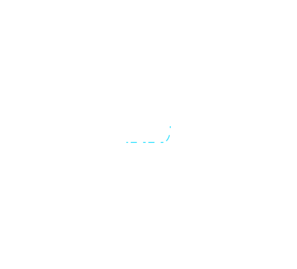

Ссылки на Государственный реестр лекарственных средств
Инструкция по медицинскому
применению ЛП Глюкофаж® Лонг
1000 мг

750 мг

500 мг

Глюкованс®
2,5мг/500мг; 5мг/500мг

Инвокана®
100 мг, 300 мг





1977
Интересные факты
Открыты кольца Урана
Сразу две песни Queen «We will Rock You» и «We Are The Champions» стали лучшими в году
Атомоход «Арктика» первым из надводных кораблей достиг Северного полюса Земли

Опубликована повесть Кира Булычева «Сто лет тому вперёд»